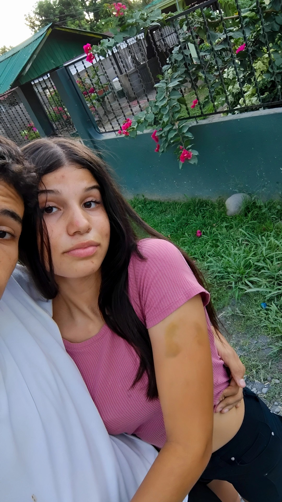
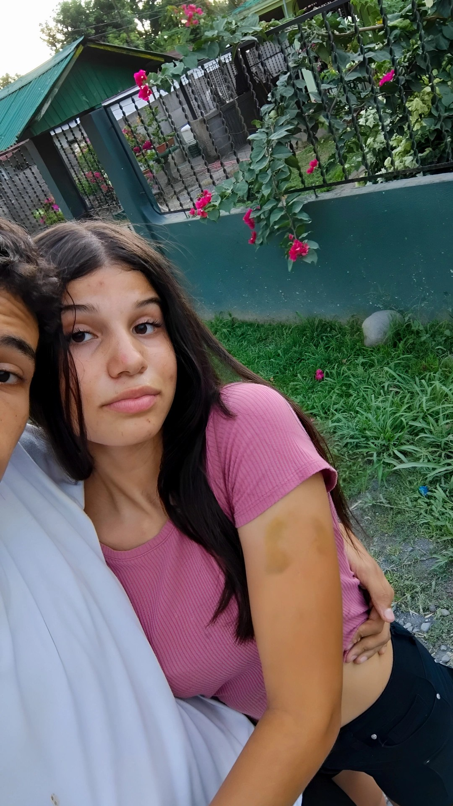

💕 Por qué te amo 💕
Te amo porque me demostraste ser una mujer super increíble, porque cuando miro sus ojos me quedo loquito, cuando te abrazo me siento en paz, cuanto te beso mi corazón da mil vueltas, te amo porque con usted puedo ser super rarito y te ríes conmigo, porque podemos hablar de cualquier cosa y nos entendemos, porque cuando estoy triste siempre me sacas una sonrisa y vuelvo a estar bien, te amo porque Diosito te puso en mi vida para amarte y cuidarte y es algo que siempre intento hacer, te amo porque sin usted no sería nada, porque usted es mi razón para sentirme feliz, con ganas de vivir, y tu sabes que yo nunca me he fijado en el físico, pero también te amo porque usted me vuelve loco con su cuerpo porque estás muy rica. Te amo porque usted es diferente, es única, es mi princesita bonita, eres mi todo 💕.
 
